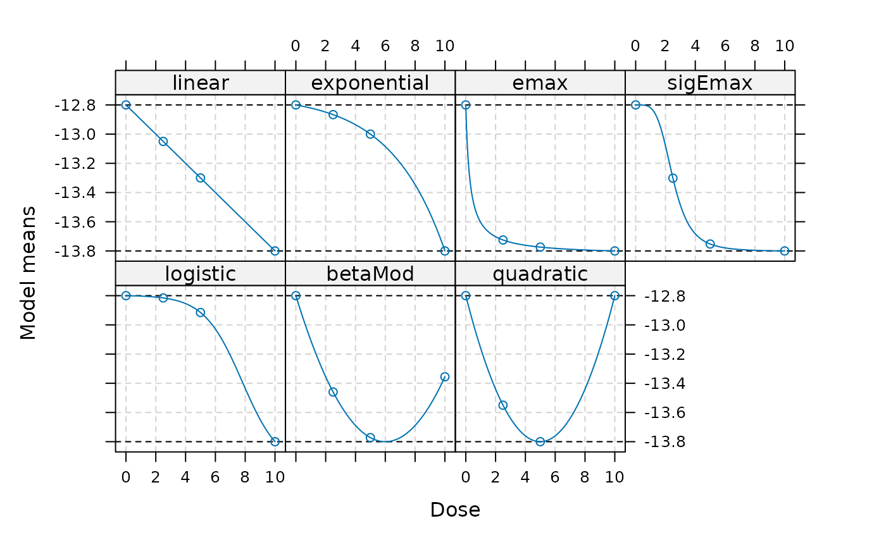
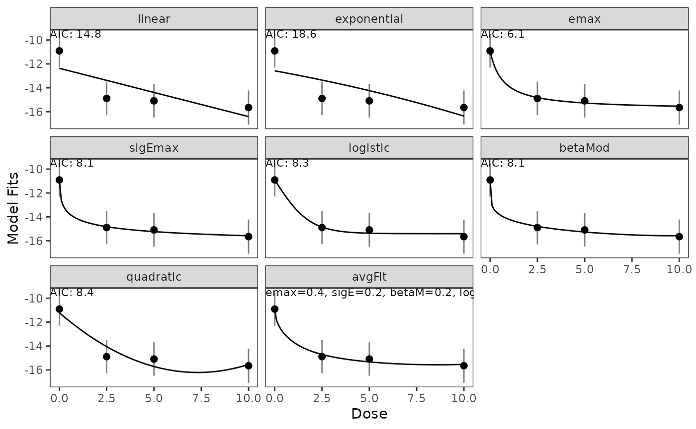
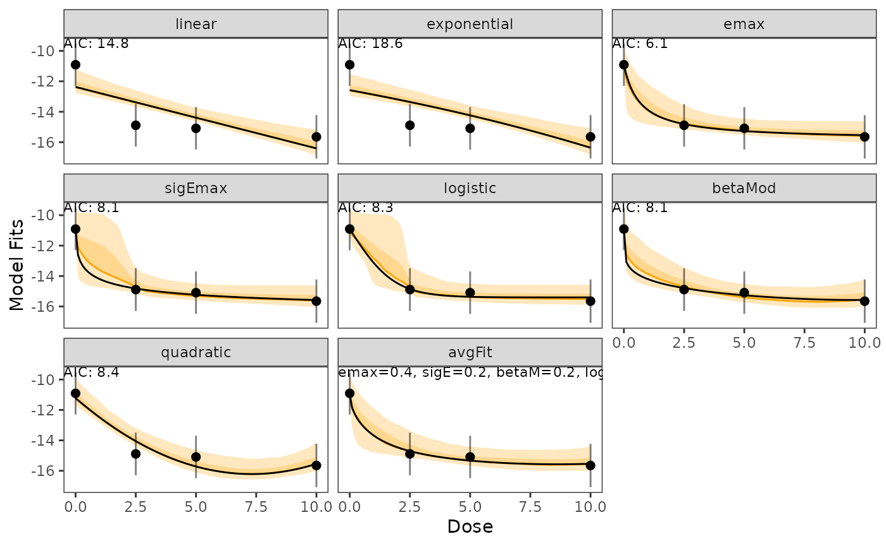

Analysis Example of Bayesian MCPMod for Continuous Data
Source:vignettes/analysis_normal_noninformative.qmd
analysis_normal_noninformative.qmd## This is RBesT version 1.7.3 (released 2024-01-02, git-sha 511a0f1)
library(clinDR)## Loading required package: rstan## Loading required package: StanHeaders##
## rstan version 2.32.6 (Stan version 2.32.2)## For execution on a local, multicore CPU with excess RAM we recommend calling
## options(mc.cores = parallel::detectCores()).
## To avoid recompilation of unchanged Stan programs, we recommend calling
## rstan_options(auto_write = TRUE)
## For within-chain threading using `reduce_sum()` or `map_rect()` Stan functions,
## change `threads_per_chain` option:
## rstan_options(threads_per_chain = 1)## Loading required package: shiny##
## Attaching package: 'dplyr'## The following objects are masked from 'package:stats':
##
## filter, lag## The following objects are masked from 'package:base':
##
## intersect, setdiff, setequal, union
#' Display Parameters Table
#'
#' This function generates a markdown table displaying the names and values of parameters
#' from a named list.
#'
#' @param named_list A named list where each name represents a parameter name and the list
#' element represents the parameter value. Date values in the list are automatically
#' converted to character strings for display purposes.
#'
#' @return Prints a markdown table with two columns: "Parameter Name" and "Parameter Values".
#' The function does not return a value but displays the table directly to the output.
#'
#' @importFrom knitr kable
#' @examples
#' params <- list("Start Date" = as.Date("2020-01-01"),
#' "End Date" = as.Date("2020-12-31"),
#' "Threshold" = 10)
#' display_params_table(params)
#'
#' @export
display_params_table <- function(named_list) {
display_table <- data.frame()
value_names <- data.frame()
for (i in 1:length(named_list)) {
# dates will display as numeric by default, so convert to char first
if (class(named_list[[i]]) == "Date") {
named_list[[i]] = as.character(named_list[[i]])
}
if (!is.null(names(named_list[[i]]))) {
value_names <- rbind(value_names, paste(names(named_list[[i]]), collapse = ', '))
}
values <- data.frame(I(list(named_list[[i]])))
display_table <- rbind(display_table, values)
}
round_numeric <- function(x, digits = 3) {
if (is.numeric(x)) {
return(round(x, digits))
} else {
return(x)
}
}
display_table[1] <- lapply(display_table[1], function(sublist) {
lapply(sublist, round_numeric)
})
class(display_table[[1]]) <- "list"
if (nrow(value_names) == 0) {
knitr::kable(
cbind(names(named_list), display_table),
col.names = c("Name", "Value")
)
} else {
knitr::kable(
cbind(names(named_list), value_names, display_table),
col.names = c("Name", "Value Labels", "Value")
)
}
}Introduction
This vignette demonstrates the application of the {BayesianMCPMod} package for analyzing a phase 2 dose-finding trial using the Bayesian MCPMod approach.
Prior Specification
Ideally, priors are grounded in historical data. This approach allows for the synthesis of prior knowledge with current data, enhancing the accuracy of trial evaluations.
The focus of this vignette is more generic, however. We specify weakly-informative priors across all dose groups to allow the trial data to have a stronger influence on the analysis.
Dose-Response Model Shapes
Candidate models are specified using the {DoseFinding} package. Models can be parameterized using guesstimates or by directly providing distribution parameters. Note that the linear candidate model does not require parameterization.
Note: The LinLog model is rarely used and not currently supported by BayesianMCPMod.
In the code below, the models are “guesstimated” using the
DoseFinding::guesst function. The d option
usually takes a single value (a dose level), and the corresponding
p for the maximum effect achieved at d.
# Guesstimate estimation
exp_guesst <- DoseFinding::guesst(
model = "exponential",
d = 5, p = 0.2, Maxd = max(dose_levels)
)
emax_guesst <- DoseFinding::guesst(
model = "emax",
d = 2.5, p = 0.9
)
sigEmax_guesst <- DoseFinding::guesst(
model = "sigEmax",
d = c(2.5, 5), p = c(0.5, 0.95)
)
logistic_guesst <- DoseFinding::guesst(
model = "logistic",
d = c(5, 10), p = c(0.1, 0.85)
)In some cases, you need to provide more information. For instance,
sigEmax requires a pair of d and
p values, and exponential requires the
specification of the maximum dose for the trial (Maxd).
See the help files for model specifications by
typing ?DoseFinding::guesst in your console
Of course, you can also specify the models directly on the parameter
scale (without using DoseFinding::guesst).
For example, you can get a betaMod model by specifying
delta1 and delta2 parameters
(scale is assumed to be 1.2 of the maximum
dose), or a quadratic model with the delta2 parameter.
Now, we can go ahead and create a Mods object, which
will be used in the remainder of the vignette.
mods <- DoseFinding::Mods(
linear = NULL,
# guesstimate scale
exponential = exp_guesst,
emax = emax_guesst,
sigEmax = sigEmax_guesst,
logistic = logistic_guesst,
# parameter scale
betaMod = betaMod_params,
quadratic = quadratic_params,
# Options for all models
doses = dose_levels,
maxEff = -1,
placEff = -12.8
)
plot(mods)
The mods object we just created above contains the full
model parameters, which can be helpful for understanding how the
guesstimates are translated onto the parameter scale.
display_params_table(mods)| Name | Value Labels | Value |
|---|---|---|
| linear | e0, delta | -12.8, -0.1 |
| exponential | e0, e1, delta | -12.800, -0.067, 3.607 |
| emax | e0, eMax, ed50 | -12.800, -1.028, 0.278 |
| sigEmax | e0, eMax, ed50, h | -12.800, -1.003, 2.500, 4.248 |
| logistic | e0, eMax, ed50, delta | -12.797, -1.179, 7.794, 1.272 |
| betaMod | e0, eMax, delta1, delta2 | -12.8, -1.0, 1.0, 1.0 |
| quadratic | e0, b1, b2 | -12.80, -0.40, 0.04 |
And we can see the assumed treatment effects for the specified dose groups below:
| linear | exponential | emax | sigEmax | logistic | betaMod | quadratic | |
|---|---|---|---|---|---|---|---|
| 0 | -12.80 | -12.80000 | -12.80000 | -12.80000 | -12.80000 | -12.80000 | -12.80 |
| 2.5 | -13.05 | -12.86667 | -13.72500 | -13.30138 | -12.81551 | -13.45972 | -13.55 |
| 5 | -13.30 | -13.00000 | -13.77368 | -13.75263 | -12.91538 | -13.77222 | -13.80 |
| 10 | -13.80 | -13.80000 | -13.80000 | -13.80000 | -13.80000 | -13.35556 | -12.80 |
Posterior Calculation
In the first step of Bayesian MCPMod, the posterior is calculated by combining the prior information with the estimated results of the trial [@fleischer_2022].
posterior <- getPosterior(
prior_list = prior_list,
mu_hat = trial_data$rslt,
se_hat = trial_data$se,
calc_ess = TRUE
)
knitr::kable(summary(posterior))| mean | sd | 2.5% | 50.0% | 97.5% | |
|---|---|---|---|---|---|
| Ctr | -10.90986 | 0.7079956 | -12.29751 | -10.90986 | -9.522218 |
| DG_2.5 | -14.88981 | 0.7149954 | -16.29117 | -14.88981 | -13.488444 |
| DG_5 | -15.08981 | 0.7119955 | -16.48529 | -15.08981 | -13.694323 |
| DG_10 | -15.64979 | 0.7279952 | -17.07664 | -15.64979 | -14.222948 |
Bayesian MCPMod Test Step
The testing step of Bayesian MCPMod is executed using a critical value on the probability scale and a pseudo-optimal contrast matrix.
The critical value is calculated using (re-estimated) contrasts for frequentist MCPMod to ensure error control when using weakly-informative priors.
A pseudo-optimal contrast matrix is generated based on the variability of the posterior distribution (see [@fleischer_2022] for more details).
crit_pval <- getCritProb(
mods = mods,
dose_levels = dose_levels,
se_new_trial = trial_data$se,
alpha_crit_val = 0.05
)
contr_mat <- getContr(
mods = mods,
dose_levels = dose_levels,
sd_posterior = summary(posterior)[, 2]
)Please note that there are different ways to derive the contrasts. The following code shows the implementation of some of these ways but it is not executed and the contrast specification above is used.
# i) the frequentist contrast
contr_mat_prior <- getContr(
mods = mods,
dose_levels = dose_levels,
dose_weights = n_patients,
prior_list = prior_list)
# ii) re-estimated frequentist contrasts
contr_mat_prior <- getContr(
mods = mods,
dose_levels = dose_levels,
se_new_trial = trial_data$se)
# iii) Bayesian approach using number of patients for new trial and prior distribution
contr_mat_prior <- getContr(
mods = mods,
dose_levels = dose_levels,
dose_weights = n_patients,
prior_list = prior_list)The Bayesian MCP testing step is then executed:
BMCP_result <- performBayesianMCP(
posterior_list = posterior,
contr = contr_mat,
crit_prob_adj = crit_pval)Summary information:
BMCP_result## Bayesian Multiple Comparison Procedure
##
## Summary:
## Sign: 1
## Critical Probability: 0.9845439
## Maximum Posterior Probability: 0.9999999
##
## Effective Sample Size (ESS) per Dose Group:
## NULL
##
## Posterior Probabilities for Model Shapes:
## Model Probability
## linear 0.9999833
## exponential 0.9989153
## emax 0.9999999
## sigEmax 0.9999995
## logistic 0.9969619
## betaMod 0.9999974
## quadratic 0.9932859
## Bayesian Multiple Comparison Procedure
## sign crit_prob_adj max_post_prob post_probs.linear post_probs.exponential
## [1,] 1 0.9845439 0.9999999 0.9999833 0.9989153
## post_probs.emax post_probs.sigEmax post_probs.logistic post_probs.betaMod
## [1,] 0.9999999 0.9999995 0.9969619 0.9999974
## post_probs.quadratic
## [1,] 0.9932859
## attr(,"essAvg")
## Ctr DG_2.5 DG_5 DG_10
## 199.5 195.6 197.3 188.7The testing step is significant, indicating a non-flat dose-response
shape. All models are significant, with the emax model
indicating the greatest deviation from the null hypothesis.
Model Fitting and Visualization
In the model fitting step the posterior distribution is used as basis.
Both simplified and full fitting are performed.
For the simplified fit, the multivariate normal distribution of the control group is approximated and reduced by a one-dimensional normal distribution.
The actual fit (on this approximated posterior distribution) is then performed using generalized least squares criterion. In contrast, for the full fit, the non-linear optimization problem is addressed via the Nelder-Mead algorithm [@neldermead_2024a] implemented by the nloptr package.
The output of the fit includes information about the predicted effects for the included dose levels, the generalized AIC, and the corresponding weights.
For the considered case, the simplified and the full fit are very similar, so we present the full fit.
# If simple = TRUE, uses approx posterior
# Here we use complete posterior distribution
fit <- getModelFits(
models = mods,
dose_levels = dose_levels,
posterior = posterior,
simple = FALSE)Estimates for dose levels not included in the trial:
| Name | Value |
|---|---|
| linear | -12.368, -13.378, -13.984, -14.388, -15.196, -16.408 |
| exponential | -12.579, -13.356, -13.872, -14.237, -15.026, -16.366 |
| emax | -10.911, -14.815, -15.146, -15.269, -15.419, -15.539 |
| sigEmax | -10.911, -14.819, -15.104, -15.230, -15.406, -15.576 |
| logistic | -10.912, -14.849, -15.289, -15.364, -15.398, -15.402 |
| betaMod | -10.915, -14.792, -15.113, -15.263, -15.469, -15.565 |
| quadratic | -11.219, -14.050, -15.189, -15.714, -16.205, -15.541 |
Plots of fitted dose-response models and an AIC-based average model:
plot(fit)
To assess the uncertainty, one can additionally visualize credible bands (orange shaded areas, default levels are 50% and 95%).
These credible bands are calculated with a bootstrap method as follows:
Samples from the posterior distribution are drawn and for every sample the simplified fitting step and a prediction is performed.
These predictions are then used to identify and visualize the specified quantiles.
plot(fit, cr_bands = TRUE)
The bootstrap based quantiles can also be directly calculated via the
getBootstrapQuantiles() function.
For this example, only 6 quantiles are bootstrapped for each model fit.
bootstrap_quantiles <- getBootstrapQuantiles(
model_fits = fit,
quantiles = c(0.025, 0.5, 0.975),
doses = c(0, 2.5, 4, 5, 7, 10),
n_samples = 6
)
reactable::reactable(
data = bootstrap_quantiles,
groupBy = "models",
columns = list(
doses = colDef(aggregate = "count", format = list(aggregated = colFormat(suffix = " doses"))),
"2.5%" = colDef(aggregate = "mean", format = list(aggregated = colFormat(prefix = "mean = ", digits = 2), cell = colFormat(digits = 4))),
"50%" = colDef(aggregate = "mean", format = list(aggregated = colFormat(prefix = "mean = ", digits = 2), cell = colFormat(digits = 4))),
"97.5%" = colDef(aggregate = "mean", format = list(aggregated = colFormat(prefix = "mean = ", digits = 2), cell = colFormat(digits = 4)))
)
)Technical note: The median quantile of the bootstrap based procedure is not necessary similar to the main model fit, as they are derived via different procedures.
The main fit (black line) minimizes residuals for the posterior distribution, while the bootstrap median is the median fit of random sampling.
Additional note
Testing and modeling can also be combined via
performBayesianMCPMod(), but this is not run here.
performBayesianMCPMod(
posterior_list = posterior,
contr = contr_mat,
crit_prob_adj = crit_pval,
simple = FALSE)